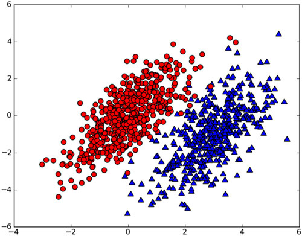
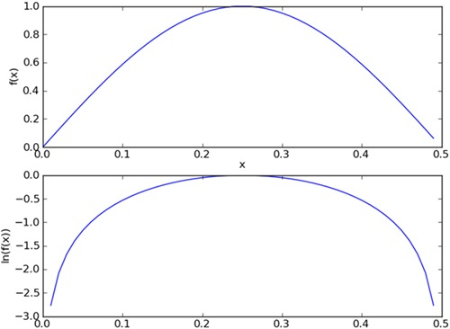

前两章的分类器只能给出分类结果，而不能给出概率，这一章将学习一个最简单的概率分类器，朴素贝叶斯分类器。之所以称为朴素，是因为整个形式化过程只做最原始，最简单的假设。
基于贝叶斯决策理论的分类方法
朴素贝叶斯
优点：在数据较少的情况下仍然有效，可以处理多分类问题
缺点：对输入数据的准备方式较为敏感
适用数据类型：标称型数据
朴素贝叶斯是贝叶斯理论的一部分，假设我们有一个数据集，它由两类组成

我们现在用p1(x,y)，表示数据点(x,y)属于类别1（图中圆点表示的类别）的概率，用p2(x,y)表示数据点(x,y)属于类别2（图中用三角形表示的类别）的概率，那么对于一个新数据点(x,y)数据点，可以用下面的规则来判断它的类别：
如果p1(x,y) > p2(x,y)，那么类别为1
如果p2(x,y) > p1(x,y)，那么类别为2
也就是说我们会选择高概率对应的类别，这就是贝叶斯决策理论的核心思想，即选择具有最高概率的决策。
条件概率
$$p(c|x)=\frac{p(x|c)p(c)}{p(x)}$$
读作c在x发生的条件下发生的概率
使用条件概率
根据上面所说我们可以知道
$$p(c_i|x)=\frac{p(x|c_i)p(c_i)}{p(x)}$$
如果P(c1|x,y) > P(c2|x,y)，那么类别为C1
如果P(c1|x,y) < P(c2|x,y)，那么类别为C2
使用贝叶斯准则，我们可以通过已知的三个概率值来计算未知的概率值。
注释：P(c1|x,y)读作：c1在x发生的条件下发生的概率与y的联合概率。联合概率表示两个事件共同发生的概率。A与B的联合概率表示为 P(AB) 或者P(A,B),或者P(A∩B)
使用朴素贝叶斯进行文档分类
朴素贝叶斯是适用于文档分类的常用算法，我们可以观察文档中出现的词，并把每个词出现或者不出现作为一个特征，这样得到的特征数目就会跟词汇表中的词目一样多。
朴素贝叶斯的一般过程
- 收集数据：可以使用任何方法，本章使用的是RSS源
- 准备数据：需要数值型或者布尔型数据
- 分析数据：有大量特征时，绘制特征作用不大，此时使用直方图效果更好
- 训练算法：计算不同的独立特征的条件概率
- 测试算法：计算错误率
- 使用算法：一个常见的朴素贝叶斯应用是文档分类。可以在任意分类场景中使用。
假设词汇表有1000个单词，想要得到好的概率分布，就需要足够的样本，假定样本数为N。由统计学知，如果每个特征需要N个样本，那么对于10个特征将需要$N^{10}$个样本，对于包含1000个特征的词汇表将需要$N^{1000}$个样本。所需要的样本数会随着特征数目增大而迅速增长。
如果特征之间相互独立，那么样本数可以从$N^{1000}$减少到1000×N个。所谓的独立（independence）指的是统计意义上的独立，即一个特征或单词出现的可能性与它和其他单词相邻没有关系。另一个要求是是说每个特征的重要程度是相同的。当然这在现实中是不可能的。
使用Python进行文本分类
如何从文本中获取特征，我们要构建一个文本词条（token），它是一些单词的组合，然后将一个文本段表示为一个向量词条，其中值为1表示单词出现在文本中，0表示单词未出现在文本中。
准备数据：从文本中构建词向量
1 | from numpy import * |
第一个函数createVocabList()创建了一个实验样本。该函数返回几个切分好的文本词条，已经去除标点符号，第二个返回值是一个类别标签的集合，有两类，侮辱性和非侮辱性。
createVocabList()函数创建了一个包含文档所有单词的列表，列表中没有重复值。
setOfWords2Vec()输入参数是词汇表，和某个文档，输出是这个文档的向量。
1 | listOPosts, listClasses = loadDataSet() |
['posting',
'to',
'please',
'help',
'him',
'worthless',
'mr',
'love',
'is',
'stop',
'has',
'stupid',
'flea',
'I',
'quit',
'problems',
'steak',
'cute',
'garbage',
'food',
'park',
'dog',
'dalmation',
'licks',
'buying',
'ate',
'not',
'maybe',
'take',
'so',
'how',
'my']
1 | setOfWords2Vec(myVocabList, listOPosts[0]) |
[0,
0,
1,
1,
0,
0,
0,
0,
0,
0,
1,
0,
1,
0,
0,
1,
0,
0,
0,
0,
0,
1,
0,
0,
0,
0,
0,
0,
0,
0,
0,
1]
1 | setOfWords2Vec(myVocabList, listOPosts[3]) |
[1,
0,
0,
0,
0,
1,
0,
0,
0,
1,
0,
1,
0,
0,
0,
0,
0,
0,
1,
0,
0,
0,
0,
0,
0,
0,
0,
0,
0,
0,
0,
0]
训练算法：从词向量计算概率
我们使用前面的贝叶斯公式，将x,y替换位w,w表示一个向量，它由多个数值组成：
$$p(c_i|w)=\frac{p(w|c_i)p(c_i)}{p(w)}$$
计算方法：
$p(c_i)=类别i中的单词数\div总的单词数$
$p(w|c_i)=p(w_0,w_1,w_2…w_N|c_i)=p(w_0|c_i)p(w_1|c_i)p(w_2|c_i)…p(w_N|c_i)$
伪代码：
计算每个类别中的单词数
对每篇训练文档：
对每个类别：
如果词条出现在文档中->增加该词条的计数值
增加所有词条的计数值
对每个类别：
对每个词条：
将该词条的数目除以总词条数目得到条件概率
返回每个类别的条件概率
1 | def trainNB0(trainMatrix, trainCategory): |
代码中的输入为文档矩阵trainMatrix，和每篇文档类别标签所构成的向量trainCategory。首先计算侮辱性文档（class=1）的概率，即P(1).因为这是个二分类问题，所有可以通过计算p(0)=1-p(1)
1 | trainMat = [] |
1 | p0V, p1V, pAb = trainNB0(trainMat, listClasses) |
1 | p0V |
array([0. , 0.04166667, 0.04166667, 0.04166667, 0.08333333,
0. , 0.04166667, 0.04166667, 0.04166667, 0.04166667,
0.04166667, 0. , 0.04166667, 0.04166667, 0. ,
0.04166667, 0.04166667, 0.04166667, 0. , 0. ,
0. , 0.04166667, 0.04166667, 0.04166667, 0. ,
0.04166667, 0. , 0. , 0. , 0.04166667,
0.04166667, 0.125 ])
1 | p1V |
array([0.05263158, 0.05263158, 0. , 0. , 0.05263158,
0.10526316, 0. , 0. , 0. , 0.05263158,
0. , 0.15789474, 0. , 0. , 0.05263158,
0. , 0. , 0. , 0.05263158, 0.05263158,
0.05263158, 0.10526316, 0. , 0. , 0.05263158,
0. , 0.05263158, 0.05263158, 0.05263158, 0. ,
0. , 0. ])
1 | pAb |
0.5
测试算法：根据实际情况修改分类器
在计算多个概率的乘积一获得分档属于某个类别的概率，即计算$p(w_0|c_i)p(w_1|c_i)p(w_2|c_i)$时候，如果其中一个概率的值为0，那么最后的乘积也为0，为了降低这种影响，我们将所有词出现的次数初始化为1，将分母初始化为2。
另一个遇到的问题是下溢，是由于太多的很小的数相乘造成的，可以求对数避免下溢。

观察上图发现，f(x)和ln(f(x))的曲线趋势是相同的
1 | def trainNB0(trainMatrix, trainCategory): |
朴素贝叶斯分类函数：
1 | def classifyNB(vec2Classify, p0Vec, p1Vec, pClass1): |
1 | testingNB() |
['love', 'my', 'dalmation'] classif as 0
['stupid', 'garbage'] classif as 1
测试结果，第一句话是非侮辱性的，第二句是侮辱性的，分类正确
准备数据：文档词袋模型
每个词的出现次数作为一个特征，这个可以被描述为词集模型（set of word model），如果一个词在文档中的出现不止一次，这种方法被称为词袋模型（bag of words model），修改setOfWords2Vec()函数为bagOfWords2Vec()
1 | def bagOfWords2Vec(vocabList, inputSet): |
现在分类器已经构建好了，下面利用该分类器过滤垃圾邮件。
实例：使用朴素贝叶斯过滤垃圾邮件
- 收集数据：提供的文本文件
- 准备数：将文本文件解析成词条向量
- 分析数据：检查词条确保解析的正确性
- 训练算法：使用我们之前建立的trainBN()函数
- 测试算法：使用classifyNB()，并且构建一个新的测试函数来计算文档集的错误
- 使用算法：构建一个完整的程序过程对一组文档进行分类，将错分的文档输出到屏幕上
准备数据：切分文本
使用python的string.split()方法切分
使用re.compile(‘\W*’)去除标点和数字。
去除空字符串
使用.lower()转换为小写
1 | import re |
测试算法：使用朴素贝叶斯进行交叉验证
1 | def textParse(bigString): |
1 | spamTest() |
the error rate is 0.0
0.0
1 | spamTest() |
classification error ['this', 'mail', 'was', 'sent', 'from', 'notification', 'only', 'address', 'that', 'cannot', 'accept', 'incoming', 'mail', 'please', 'not', 'reply', 'this', 'message', 'thank', 'you', 'for', 'your', 'online', 'reservation', 'the', 'store', 'you', 'selected', 'has', 'located', 'the', 'item', 'you', 'requested', 'and', 'has', 'placed', 'hold', 'your', 'name', 'please', 'note', 'that', 'all', 'items', 'are', 'held', 'for', 'day', 'please', 'note', 'store', 'prices', 'may', 'differ', 'from', 'those', 'online', 'you', 'have', 'questions', 'need', 'assistance', 'with', 'your', 'reservation', 'please', 'contact', 'the', 'store', 'the', 'phone', 'number', 'listed', 'below', 'you', 'can', 'also', 'access', 'store', 'information', 'such', 'store', 'hours', 'and', 'location', 'the', 'web', 'http', 'www', 'borders', 'com', 'online', 'store', 'storedetailview_98']
the error rate is 0.1
0.1
每一次得到的错误率都不同，要想更好的评估错误率，可以重复多次，十次计算求平均错误率为6%
1 | errorRate = 0 |
the error rate is 0.2
the error rate is 0.1
the error rate is 0.0
the error rate is 0.0
the error rate is 0.1
the error rate is 0.1
the error rate is 0.1
the error rate is 0.0
the error rate is 0.1
the error rate is 0.0
0.06999999999999999
实例：使用朴素贝叶斯分类器从个人广告中获取区域倾向
下面将使用来自不同城市的广告训练一个分类器，然后观察分类的效果，我们的目的不是使用该分类器进行分类，而是通过观察单词和条件概率值来发现与特定城市相关的内容，
收集数据：导入RSS源
利用python下载RSS的文本。
首先需要安装feedparser,https://github.com/kurtmckee/feedparser
1 | %pip install feedparser |
1 | import feedparser |
接下来作者使用了RSS源http://newyork.craigslist.org/stp/index.rss 已经不能访问了
书中作者的意思是以来自源 http://newyork.craigslist.org/stp/index.rss 中的文章作为分类为1的文章，以来自源 http://sfbay.craigslist.org/stp/index.rss 中的文章作为分类为0的文章
为了能够跑通示例代码，可以找两可用的RSS源作为替代。
我用的是这两个源：
NASA Image of the Day：http://www.nasa.gov/rss/dyn/image_of_the_day.rss
Yahoo Sports - NBA - Houston Rockets News：http://sports.yahoo.com/nba/teams/hou/rss.xml
也就是说，如果算法运行正确的话，所有来自于 nasa 的文章将会被分类为1，所有来自于yahoo sports的休斯顿火箭队新闻将会分类为0
1 | ny=feedparser.parse('https://www.nasa.gov/rss/dyn/image_of_the_day.rss') |
1 | len(ny['entries']) |
60
1 | def calcMostFreq(vocabList,fullText): |
calcMostFreq()函数的功能是遍历词汇表中的每个词并统计它在文本中出现的次数，然后根据出现次数从高到低对词典进行排序，返回排序最高的30个单词。
1 | ny=feedparser.parse('http://www.nasa.gov/rss/dyn/image_of_the_day.rss') |
1 | vocabList, pSF, pNY=localWords(ny, sf) |
the error rate is: 0.5
1 | vocabList, pSF, pNY=localWords(ny, sf) |
the error rate is: 0.35
分析数据：显示地域相关的用词
先对pSF和pNY进行排序，然后按照顺序将词打印出来。
1 | def getTopWords(ny,sf): |
1 | getTopWords(ny,sf) |
the error rate is: 0.2
SF**SF**SF**SF**SF**SF**SF**SF**SF**SF**SF**SF**SF**SF**SF**SF**
westbrook
but
fund
michael
los
also
amid
NY**NY**NY**NY**NY**NY**NY**NY**NY**NY**NY**NY**NY**NY**NY**NY**
arms
station
program
agency
spacecraft
milky
总结
对于分类而言，使用概率有时要比使用硬规则更为有效。贝叶斯概率即贝叶斯准则提供了一种利用一直值来估计未知概率的有效方法。
可以通过特征之间的条件独立性假设，降低对数据量的需求。独立性假设是指一个词出现的概率不依赖与文档中的其他词。
编程贝叶斯时需要考虑很多实际因素。下溢出就是其中之一，可以通过对概率取对数来解决。还有其他方法改进，比如移除停用词。